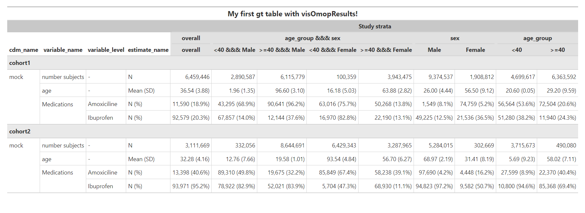

Package overview
visOmopResults contains functions for formatting objects of the class summarised_result (see R package omopgenerics). This package simplifies the handling of these objects to obtain nice output tables in the format of gt or flextable’ to report results via Shiny apps, RMarkdown, Quarto, and more.
Installation
You can install the latest version of visOmopResults from CRAN:
install.packages("visOmopResults")Or you can install the development version from GitHub with:
# install.packages("devtools")
devtools::install_github("darwin-eu/visOmopResults")Example usage
First, we load the package and create a summarised result object with mock results
library(visOmopResults)
result <- mockSummarisedResult()We can use the function visOmopTable() to get a nice gt table:
visOmopTable(
result,
formatEstimateName = c("N%" = "<count> (<percentage>)",
"N" = "<count>",
"Mean (SD)" = "<mean> (<sd>)"),
header = c("Stratifications", "strata"),
split = c("group","additional")
)
In the code snipped showed, we specified how to group and display the estimates with formatEstimateName. Also, we created a header based on the stratifications with header, and we split the name-level paired columns group and additional (refer to the “split and unite functions” vignette for more information on splitting).
Custom formatting - Example usage
The function visOmopTable() is wrapped around other functions of the package. These can be implemented in a pipeline for additional customisation of the summarised_result.
1. formatEstimateValue()
We utilize this function to modify the estimate_value column. In this case, we will apply the default settings of the function, which include using 0 decimals for integer values, 2 decimals for numeric values, 1 decimal for percentages, and 3 decimals for proportions. Additionally, the function sets the decimal mark to ‘.’, and the thousand/millions separator to ‘,’ by default.”
result <- result |>
formatEstimateValue(
decimals = c(integer = 0, numeric = 2, percentage = 1, proportion = 3),
decimalMark = ".",
bigMark = ",")
result |> dplyr::glimpse()
#> Rows: 126
#> Columns: 13
#> $ result_id <int> 1, 1, 1, 1, 1, 1, 1, 1, 1, 1, 1, 1, 1, 1, 1, 1, 1, 1,…
#> $ cdm_name <chr> "mock", "mock", "mock", "mock", "mock", "mock", "mock…
#> $ group_name <chr> "cohort_name", "cohort_name", "cohort_name", "cohort_…
#> $ group_level <chr> "cohort1", "cohort1", "cohort1", "cohort1", "cohort1"…
#> $ strata_name <chr> "overall", "age_group &&& sex", "age_group &&& sex", …
#> $ strata_level <chr> "overall", "<40 &&& Male", ">=40 &&& Male", "<40 &&& …
#> $ variable_name <chr> "number subjects", "number subjects", "number subject…
#> $ variable_level <chr> NA, NA, NA, NA, NA, NA, NA, NA, NA, NA, NA, NA, NA, N…
#> $ estimate_name <chr> "count", "count", "count", "count", "count", "count",…
#> $ estimate_type <chr> "integer", "integer", "integer", "integer", "integer"…
#> $ estimate_value <chr> "4,392,319", "7,536,112", "537,318", "3,563,375", "4,…
#> $ additional_name <chr> "overall", "overall", "overall", "overall", "overall"…
#> $ additional_level <chr> "overall", "overall", "overall", "overall", "overall"…2. formatEstimateName()
With this function we can transform the estimate_name and estimate_value columns. For example, it allows to consolidate into one row counts and percentages related to the same variable within the same group and strata. It’s worth noting that the estimate_name is enclosed within <…> in the estimateNameFormat argument.
result <- result |> formatEstimateName(
estimateNameFormat = c("N (%)" = "<count> (<percentage>%)",
"N" = "<count>",
"Mean (SD)" = "<mean> (<sd>)"),
keepNotFormatted = FALSE)
result |> dplyr::glimpse()
#> Rows: 72
#> Columns: 13
#> $ result_id <int> 1, 1, 1, 1, 1, 1, 1, 1, 1, 1, 1, 1, 1, 1, 1, 1, 1, 1,…
#> $ cdm_name <chr> "mock", "mock", "mock", "mock", "mock", "mock", "mock…
#> $ group_name <chr> "cohort_name", "cohort_name", "cohort_name", "cohort_…
#> $ group_level <chr> "cohort1", "cohort1", "cohort1", "cohort1", "cohort1"…
#> $ strata_name <chr> "overall", "age_group &&& sex", "age_group &&& sex", …
#> $ strata_level <chr> "overall", "<40 &&& Male", ">=40 &&& Male", "<40 &&& …
#> $ variable_name <chr> "number subjects", "number subjects", "number subject…
#> $ variable_level <chr> NA, NA, NA, NA, NA, NA, NA, NA, NA, NA, NA, NA, NA, N…
#> $ estimate_name <chr> "N", "N", "N", "N", "N", "N", "N", "N", "N", "N", "N"…
#> $ estimate_type <chr> "character", "character", "character", "character", "…
#> $ estimate_value <chr> "4,392,319", "7,536,112", "537,318", "3,563,375", "4,…
#> $ additional_name <chr> "overall", "overall", "overall", "overall", "overall"…
#> $ additional_level <chr> "overall", "overall", "overall", "overall", "overall"…3. formatHeader()
Next step is to format our table before transforming to gt object. We will pivot strata_name and strata_level columns to have the strata groups as columns under the header “Study strata”.
result <- result |>
formatHeader(header = c("Study strata", "strata_name", "strata_level"),
delim = "\n",
includeHeaderName = FALSE,
includeHeaderKey = TRUE)
result |> dplyr::glimpse()
#> Rows: 8
#> Columns: 19
#> $ result_id <int> …
#> $ cdm_name <chr> …
#> $ group_name <chr> …
#> $ group_level <chr> …
#> $ variable_name <chr> …
#> $ variable_level <chr> …
#> $ estimate_name <chr> …
#> $ estimate_type <chr> …
#> $ additional_name <chr> …
#> $ additional_level <chr> …
#> $ `[header]Study strata\n[header_level]overall\n[header_level]overall` <chr> …
#> $ `[header]Study strata\n[header_level]age_group &&& sex\n[header_level]<40 &&& Male` <chr> …
#> $ `[header]Study strata\n[header_level]age_group &&& sex\n[header_level]>=40 &&& Male` <chr> …
#> $ `[header]Study strata\n[header_level]age_group &&& sex\n[header_level]<40 &&& Female` <chr> …
#> $ `[header]Study strata\n[header_level]age_group &&& sex\n[header_level]>=40 &&& Female` <chr> …
#> $ `[header]Study strata\n[header_level]sex\n[header_level]Male` <chr> …
#> $ `[header]Study strata\n[header_level]sex\n[header_level]Female` <chr> …
#> $ `[header]Study strata\n[header_level]age_group\n[header_level]<40` <chr> …
#> $ `[header]Study strata\n[header_level]age_group\n[header_level]>=40` <chr> …4. gtTable()
Finally, we convert the transformed summarised_result object in steps 1, 2, and 3, into a nice gt object. We use the default visOmopResults style. Additionally, we separate data into groups specified by group_level column to differentiate between cohort1 and cohort2.
gtResult <- result |>
dplyr::select(-c("result_type", "package_name", "package_version",
"group_name", "additional_name", "additional_level",
"estimate_type", "result_id")) |>
gtTable(
delim = "\n",
style = "default",
na = "-",
title = "My first gt table with visOmopResults!",
groupColumn = "group_level",
groupAsColumn = FALSE,
groupOrder = c("cohort1", "cohort2"),
colsToMergeRows = "all_columns"
)
gtResult 
It is important to notice that visOmopTable has additional arguments to customise the output table in a similar manner as in the pipeline. See the vignette “format functions”.